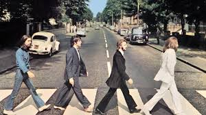

Abbey Road

Their most famous album was Abbey Road released on 26 September 1969 by Apple Records. The album incorporates genres such as blues, rock and pop
John, who formed the group was a charismatic, nervous, witty, and acerbic guy who was happy with his bandmates, his guitar, or a good book.
Paul, the first to join, was the last to leave. He was the extrovert of the group, the hardest to know, He was a fine guitarist, he had a good singing voice that blended well with both Paul and John’s voices, and he grew into a strong songwriter
George, the second to join, was the baby of the group and therefore the one with the most to prove. he had a good singing voice that blended well with both Paul and John’s voices, and he grew into a strong songwriter.
Ringo, who joined last, was the final piece of the Beatle puzzle and the emotional glue that held the band together. He was a superb, intuitive drummer who valued substance over style, though he could play, and did play, numerous styles.